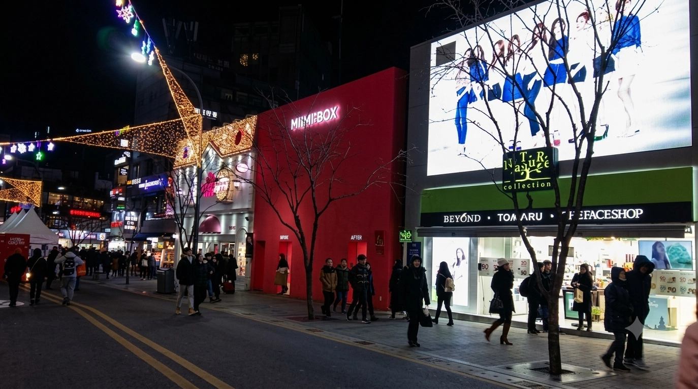

Où loger à Séoul à petit budget 2026
Une chambre moins chère ne signifie pas toujours un voyage à Séoul moins coûteux. Hongdae offre souvent le meilleur équilibre entre choix d’hébergements, repas et accès à l’aéroport pour les petits budgets. Gongdeok ou Sinchon peuvent être plus pertinents si les bagages, les soirées tranquilles ou la durée du séjour comptent davantage.
Euljiro et Myeongdong coûtent généralement plus cher par nuit. Mais pour un court séjour, leur situation centrale peut réduire le temps de transport et faciliter sensiblement le reste de la journée.
La question utile n’est pas seulement « Quel quartier propose la chambre la moins chère ? », mais « Quel quartier me permet de réduire le coût total sans compliquer le voyage ? »
Ce qui rend réellement un séjour à Séoul moins cher
Le prix de la chambre n’est qu’une partie du budget. L’hôtel le moins cher peut perdre son intérêt s’il ajoute une longue marche depuis la station, des correspondances répétées, des frais d’aéroport ou des taxis tard le soir.
Les petits détails de l’hôtel comptent aussi. Petit-déjeuner, laverie, consigne et espace nécessaire pour deux personnes ou une famille peuvent changer le coût final bien plus que le premier tarif par nuit ne le laisse penser.
Ce guide examine donc l’ensemble du séjour, sans classer les quartiers de Séoul uniquement selon la chambre la moins chère disponible à un instant donné.
Additionnez les coûts que les écrans de réservation présentent séparément
Calculer le coût réel de votre séjour à Séoul
Le tarif par nuit n’est que le premier chiffre. Un hôtel qui paraît moins cher au moment de réserver peut finir par coûter davantage une fois le reste du voyage pris en compte.
Une comparaison utile inclut le prix final de la chambre, les transports depuis l’aéroport et au quotidien, les éventuels taxis tardifs, le petit-déjeuner, la laverie, la consigne et tout lit supplémentaire ou deuxième chambre.
Tous les voyageurs ne paieront pas tous ces frais. L’idée est de repérer ceux qui s’appliquent vraiment à votre voyage avant de considérer automatiquement le tarif de chambre le plus bas comme l’option la moins chère.
Les quartiers de Séoul pour les petits budgets en un coup d’œil
Il s’agit de tendances par quartier, sans garantie pour chaque hôtel. Un établissement près d’une sortie difficile peut être moins pratique que le nom du quartier ne le laisse penser.
| Quartier | Tendance des prix des chambres | Accès à l’aéroport | Visites du centre | Commodité au quotidien | Risque de frais cachés | Convient bien pour |
|---|---|---|---|---|---|---|
| Hongdae | Large choix, avec des hausses fréquentes le week-end | AREX direct, mais vérifiez la distance entre le quai et l’hôtel | Point de départ utile sur la ligne 2 ; les trajets vers le centre s’additionnent tout de même | Nombreux repas, cafés et possibilités tardives | Bruit, foule et longs parcours dans la station | Voyageurs utilisant le train de l’aéroport et souhaitant du choix |
| Mapo / Gongdeok | Peut coûter plus cher que les quartiers étudiants proches | AREX à Gongdeok et liaisons utiles dans la ville | Assez central pour réduire les correspondances répétées | Repas et services pratiques, plus calme la nuit | Choix d’hôtels plus limité ; les sorties restent importantes | Gros bagages et quotidien plus calme |
| Sinchon | Souvent compétitif pour les chambres simples et les longs séjours | Demande généralement une liaison supplémentaire ou une correspondance à Hongdae | La ligne 2 aide, mais les trajets d’aéroport sont moins directs | Repas aux prix étudiants et services pour les longs séjours | Qualité des établissements et accès avec bagages variables | Longs séjours attentifs aux dépenses quotidiennes |
| Euljiro | La situation centrale peut se payer plus cher par nuit | Il faut généralement prévoir une correspondance ou le bus de l’aéroport | Réduit les trajets répétés entre de nombreux sites du centre | Bons transports et repas, avec des différences selon les rues | Passages souterrains et sorties inégalement pratiques | Courts séjours dans le centre |
| Myeongdong | Souvent plus élevé, surtout aux emplacements pratiques | Les bus de l’aéroport peuvent simplifier certains trajets | Retours faciles entre shopping et visites | Services pour les visiteurs et commerces proches | Foule, escaliers et mauvaise sortie avec des bagages | Courts premiers voyages et shopping |
| Dongdaemun | Une offre variée peut donner des tarifs compétitifs | Comparez précisément le bus ou la correspondance en train | Utile pour les activités dans l’est et le centre | Le shopping tardif facilite certains programmes | Grands carrefours et stations complexes | Visiteurs déjà venus, avec un programme centré sur le shopping |
Le quartier le moins cher ne donne pas toujours le voyage le moins cher. Comparez l’entrée précise de l’hôtel, la sortie de station, le trajet depuis l’aéroport, la laverie, la consigne et le total final du site de réservation.
Hongdae

Hongdae est souvent le point de départ le plus simple pour un petit budget : large offre d’hébergements, repas simples, sorties et AREX omnibus direct depuis l’aéroport d’Incheon s’y combinent. La ligne 2 permet aussi de rejoindre facilement de nombreux secteurs de Séoul sans trajets quotidiens compliqués.
La chambre la moins chère n’est pas automatiquement la meilleure affaire à Hongdae. Les hôtels proches des rues de sortie les plus animées peuvent être bruyants. Un établissement apparemment proche de Hongik University peut aussi imposer une longue marche dans cette très grande station. Cela compte surtout à l’arrivée avec les bagages.
Pour combiner repas abordables, soirées animées et liaison facile avec l’aéroport dans un même quartier, Hongdae reste l’une des meilleures options économiques de Séoul.
Lire le guide de Hongdae →Mapo / Gongdeok

Mapo et Gongdeok peuvent être globalement plus avantageux qu’une chambre moins chère ailleurs si les bagages et les trajets d’aéroport comptent beaucoup. Gongdeok est desservi directement par l’AREX omnibus, et le quartier est généralement plus calme le soir que Hongdae, tout proche.
Le choix d’hébergements est moins large qu’à Hongdae et les grands sites touristiques ne sont pas à la porte de l’hôtel. L’avantage est une arrivée et un départ plus pratiques, avec de nombreux restaurants du quotidien à proximité.
La station elle-même est grande : la sortie précise et l’accès à l’hôtel restent donc importants. Une chambre un peu plus chère peut valoir la peine si elle évite un parcours difficile avec les bagages ou des correspondances répétées.
Lire le guide de Mapo / Gongdeok →Sinchon

Sinchon devient intéressant pour un séjour plus long, lorsque les dépenses quotidiennes comptent davantage que la proximité des grandes attractions. Ce quartier universitaire propose des repas abordables, des supermarchés et de nombreux hébergements pratiques. La ligne 2 permet de rejoindre facilement Hongdae et d’autres secteurs de Séoul.
L’accès à l’aéroport est moins direct qu’à Hongdae ou Gongdeok. Les économies sont donc plus intéressantes si le séjour est assez long pour que les repas, la laverie ou les chambres moins chers fassent une différence sur plusieurs jours.
La qualité des hôtels peut varier davantage ici que dans certains grands quartiers touristiques. La chambre et l’établissement précis comptent donc plus que le seul nom du quartier.
Euljiro et Myeongdong : payer plus pour se déplacer moins
Euljiro et Myeongdong ne sont généralement pas les premiers quartiers à explorer pour trouver le tarif le plus bas. Leur avantage est l’emplacement. Pour un court voyage, être proche des visites du centre, des commerces et des repas peut réduire les déplacements et permettre de faire plus chaque jour.
Myeongdong est particulièrement simple pour une première visite. Euljiro mêle davantage vie locale et ambiance du centre-ville. Les deux peuvent être financièrement pertinents si un tarif un peu plus élevé remplace de longs trajets quotidiens ou des taxis supplémentaires.
C’est particulièrement vrai pour trois ou quatre nuits, lorsque le temps perdu dans les transports peut compter presque autant que la différence de prix par nuit.
Lire le guide de Myeongdong →Les erreurs faciles à faire en réservant à petit budget à Séoul
-
Choisir la chambre la moins chère loin des trajets quotidiens
L’économie sur le tarif par nuit peut disparaître dans le temps et les frais de transport supplémentaires si l’essentiel du voyage se déroule de l’autre côté de la ville.
-
Considérer toutes les sorties de station comme aussi pratiques
Les sorties des grandes stations de métro peuvent être très éloignées les unes des autres. Certains parcours imposent des escaliers, des passages souterrains ou de longues marches à l’intérieur.
-
Oublier les besoins réels en chambre
Une famille ou un groupe peut avoir besoin d’un lit supplémentaire ou d’une deuxième chambre même si le premier résultat paraît peu cher. La vraie comparaison commence par la configuration que vous pouvez effectivement réserver.
-
Prévoir une arrivée tardive avec les transports de journée
Un vol arrivant tard dans la nuit peut transformer un trajet d’aéroport simple en course en taxi. L’heure d’arrivée peut compter davantage que la carte des transports de journée ne le laisse penser.
-
Comparer tarifs remboursables et non remboursables comme s’ils étaient identiques
Une réservation non remboursable moins chère ne comporte pas le même risque qu’un tarif flexible. La différence de prix ne prend son sens que si les conditions d’annulation entrent dans la décision.
Séjourner à Séoul à petit budget : questions fréquentes
Hongdae est-il le quartier le moins cher où loger à Séoul ?
Pas toujours. Hongdae propose souvent un large choix d’hébergements abordables et de repas bon marché, mais les prix varient selon les dates et l’emplacement. Son véritable avantage pour le budget est de combiner le choix de chambres, la ligne 2 et l’AREX omnibus direct.
Myeongdong vaut-il un supplément ?
Cela peut être le cas pour un court premier voyage. Myeongdong coûte souvent plus cher que Hongdae ou Sinchon, mais sa situation centrale peut réduire les trajets quotidiens et faciliter les visites.
Quel quartier économique est le plus facile à rejoindre depuis l’aéroport d’Incheon ?
Hongdae et Gongdeok sont particulièrement utiles, car ils sont tous deux desservis directement par l’AREX omnibus. Le meilleur choix dépend du trajet jusqu’à l’hôtel, des bagages et de votre préférence pour un quartier animé ou plus calme.
Quel quartier est le plus facile avec des bagages ?
Gongdeok et Hongdae sont tous deux de très bonnes options, mais la sortie de station précise et l’accès à l’hôtel comptent. Un train direct est moins utile si la dernière portion du trajet impose des escaliers difficiles ou une longue traversée de la station.
Sinchon est-il moins cher que Hongdae ?
Sinchon peut offrir un bon rapport qualité-prix, surtout pour les longs séjours et les repas du quotidien, mais il n’existe pas de règle permanente sur les prix. Hongdae propose généralement plus d’hébergements et un accès plus facile à l’aéroport.
Gongdeok est-il un bon quartier pour un petit budget ?
Oui, surtout si l’accès à l’aéroport, les bagages et des soirées plus calmes comptent beaucoup. Le tarif des chambres n’y est pas toujours le plus bas, mais la facilité des transports peut rendre le séjour globalement avantageux.
Où loger si j’ai besoin de laver mon linge ?
Sinchon est utile pour les longs séjours à petit budget, car les services du quotidien sont faciles à trouver. Il existe toutefois des possibilités de laver son linge dans tout Séoul. Le choix le plus pratique peut être un hôtel avec une laverie en libre-service ou une laverie proche.
Est-il intéressant de loger plus loin du métro pour économiser ?
Généralement, seulement si l’économie est significative. Une longue marche depuis la station se fait davantage sentir avec des bagages, par mauvais temps ou après plusieurs journées complètes de visites.
Une auberge est-elle toujours moins chère qu’un hôtel économique ?
Pas nécessairement pour tous les voyageurs. Les chambres privées d’auberge peuvent approcher les tarifs hôteliers aux dates chargées. À deux, une chambre d’hôtel simple peut parfois être plus avantageuse.
Faut-il comparer plusieurs sites de réservation ?
Oui, car le type de chambre, les conditions d’annulation et le total final peuvent différer. La comparaison utile porte sur la même chambre à conditions proches, plutôt que sur le premier prix affiché le plus bas.
Quel quartier convient le mieux à un court premier voyage ?
Myeongdong ou Euljiro peuvent être pertinents même avec un tarif plus élevé, car ils facilitent les visites du centre. Hongdae reste intéressant si l’accès à l’aéroport et les repas abordables comptent davantage.
Faut-il loger hors du centre de Séoul avec un petit budget ?
Parfois, mais la distance ne garantit pas à elle seule un meilleur rapport qualité-prix. Un emplacement périphérique moins cher est pertinent si les transports restent simples et si l’économie justifie les trajets quotidiens supplémentaires.
Le choix économique n’est pas toujours la chambre la moins chère
Hongdae reste le point de départ le plus simple pour de nombreux petits budgets, car le choix d’hébergements, les repas, les sorties et l’accès à l’aéroport se trouvent dans un même secteur. Gongdeok devient plus intéressant si les bagages et les trajets d’aéroport comptent beaucoup. Sinchon peut convenir aux longs séjours avec des dépenses quotidiennes plus basses.
Euljiro ou Myeongdong peuvent coûter plus cher par nuit, mais ce supplément peut faire gagner du temps et réduire les déplacements lors d’un court voyage. Le séjour le plus économique à Séoul est donc celui qui garde le coût total abordable sans compliquer chaque journée.